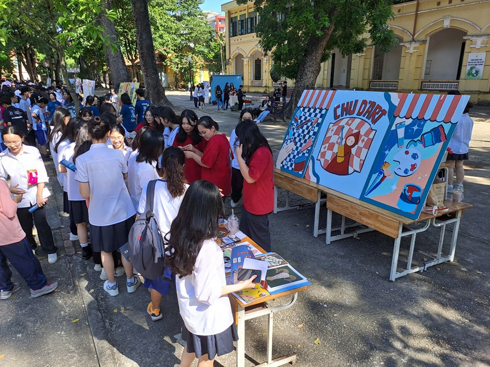
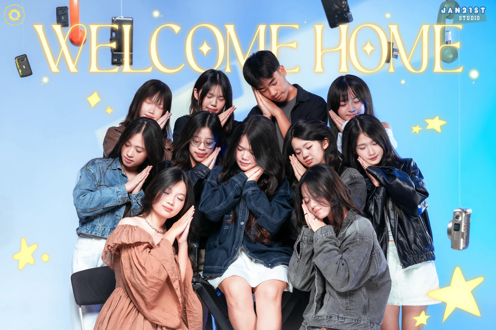
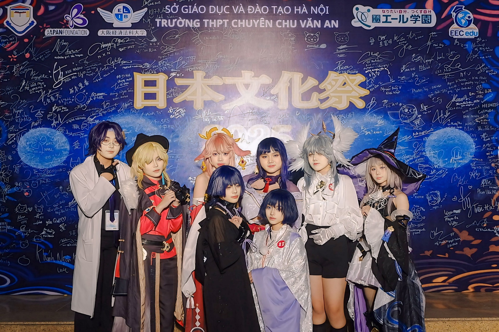

Hoạt động năng nó và hiệu quả
Cháy hết mình trong các cuộc chơi
Giành những giải thưởng cao nhất
Chu d'ArtTừng nét vẽ, từng cây cọ, từng màu sắc tô họa lên bức tranh cũng như tình yêu nghệ thuật của Chu d’Art đang vẽ lên 1000 ngày tươi đẹp của em tại mái trường Chu Ba yêu dấu. Chu d’Art là nơi hội tụ đam mê hội họa qua hàng loạt hoạt động nghệ thuật sôi nổi như Artgame, các buổi workshop sáng tạo, triển lãm tranh và đăng tải tác phẩm thành viên trên fanpage. Mỗi sự kiện không chỉ là sân chơi bổ ích mà còn là cơ hội để các bạn thể hiện cá tính, phát triển kỹ năng và lan tỏa tình yêu nghệ thuật trong mái nhà Chu Văn An. Từng khoảnh khắc sáng tạo đều mang đậm dấu ấn riêng, góp phần thắp sáng ngọn lửa đam mê trong trái tim mỗi thành viên. Chu d’Art là chuyến hải trình đầy cảm hứng, đưa những tâm hồn yêu nghệ thuật tìm đến bến bờ mới. Với K118, hành trình ấy lại mở ra một chương mới, tràn đầy nhiệt huyết và khát vọng sáng tạo. Vậy thì còn chần chừ gì nữa mà không cùng hòa nhịp trong ngôi nhà chung thân yêu này? Chu Van An Photography Club📸 Xin chào, chúng mình là The CPC - Chu Van An Photography Club, nơi đam mê nhiếp ảnh được vun đắp và tỏa sáng. 📸 Xuyên suốt 5 năm thành lập, The CPC luôn là điểm hẹn quen thuộc của các bạn trẻ muốn lưu giữ khoảnh khắc, thỏa sức sáng tạo và lan tỏa góc nhìn nghệ thuật sau ống kính. Trong nhiệm kỳ vừa qua, chúng mình đã cho ra đời nhiều bộ ảnh và may mắn nhận được sự ủng hộ từ đông đảo các bạn học sinh như “Phù Dung”, “Eclipse”, “Huyễn”. Không chỉ thế, EUPHONY, sự kiện được chúng mình kết hợp tổ chức cùng Sweet Chu Baking Club đã mang đến một trải nghiệm thật mới mẻ, để lại dấu ấn với biết bao khoảnh khắc đáng nhớ và tràn đầy cảm xúc. Trải qua hơn 5 năm cùng đồng hành và gắn bó, The CPC đã trở thành ngôi nhà gắn kết các thành viên, nơi chúng mình cùng nhau tạo nên những kỷ niệm, những giây phút vui vẻ và vô cùng quý giá KaruChuXin chào mọi người, chúng mình là KaruChu, câu lạc bộ văn hóa Nhật Bản đầu tiên và duy nhất tại trường THPT Chuyên Chu Văn An. Nếu bạn là người: 🎐Yêu thích Manga, Anime, JPop 🎐Say mê tiếng Nhật 🎐Tò mò về những nét đặc sắc của văn hoá xứ Phù Tang Vậy thì KaruChu hẳn sẽ là lựa chọn phù hợp nhất rồi! Đến với 日本語クラブ, bạn có thể thỏa mãn niềm đam mê của mình bằng những buổi sinh hoạt hàng tháng với các trò chơi dân gian truyền thống của Nhật Bản, cùng nhau nghiên cứu, tìm hiểu về những điều thật “wow” tại xứ sở mặt trời mọc. Ngoài ra, KaruChu còn có môi trường làm việc năng động, thoải mái, chuyên nghiệp và là nơi để bạn tìm được những người có chung sở thích. |
|